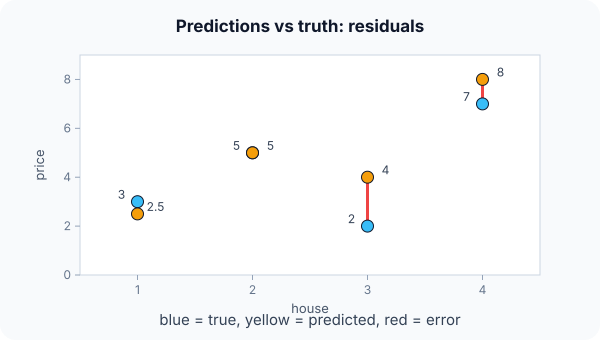

Prerequisites
- Regression: predicting a number.
- Mean, absolute value and squares.
- Square roots.
The analogy
Everyday analogy
Think of darts. MAE is the average distance of your darts from the bullseye. MSE squares each distance, so one dart that hits the wall counts as much as dozens of near misses.
R² compares you with a player who throws every dart at the middle of the board: 1 means perfect, 0 means no better than that player, below 0 means worse.
How it works
Notation: $y_i$ is the true value, $\hat y_i$ the prediction, $e_i = y_i - \hat y_i$ the error (residual), and $\bar y$ the mean of the true values.
Start with four predictions by hand
True values $y = [3, 5, 2, 7]$, predictions $\hat y = [2.5, 5, 4, 8]$. Predict, then open "Check".
Example: predict before you read
Step 1. Compute the errors and the MAE (mean of absolute errors).
Check
Errors 0.5, 0, −2, −1. MAE $= (0.5 + 0 + 2 + 1)/4 = 0.875$.
Step 2. Cover the next line and guess: the MSE (mean of squared errors) and RMSE.
Check
Squares 0.25, 0, 4, 1. MSE $= 5.25/4 = 1.3125$; RMSE $= \sqrt{1.3125} \approx 1.15$.
Step 3. $\bar y = 4.25$. Total variation $\sum (y_i - \bar y)^2 = 14.75$. Predict $R^2 = 1 - \sum e_i^2 / \sum (y_i - \bar y)^2$.
Check
$R^2 = 1 - 5.25 / 14.75 \approx 0.64$.

Quick recall: Before reading further, cover the text above and say out loud: why is MSE more sensitive to the error of 2 than MAE?
Check your answer
Squaring turns 2 into 4 but 0.5 into 0.25, so large errors count far more than small ones.
Finish the picture: one outlier
Change the last prediction from 8 to 17 (error −10).
- MAE. Predict the new value.
Check
$(0.5 + 0 + 2 + 10)/4 = 3.125$: about 3.6 times larger.
- MSE. Predict it, and compare the growth.
Check
$(0.25 + 0 + 4 + 100)/4 \approx 26.1$: about 20 times larger. MSE is dominated by the single big miss.
Quick recall: Without scrolling up, say out loud: what happened to MAE and MSE when one prediction became badly wrong?
Check your answer
Both rose, but MSE exploded because the huge error was squared.
Full worked calculation
The page's four houses: true prices $y = [3, 5, 2, 7]$, predictions $\hat y = [2.5, 5, 4, 8]$ (hundreds of thousands). Every column of the computation is in the table; then we compare with the "always predict the mean" baseline and see what one outlier does to each metric.
| House | $y$ | $\hat y$ | $e = y - \hat y$ | $|e|$ | $e^2$ | $y - \bar y$ | $(y - \bar y)^2$ |
|---|---|---|---|---|---|---|---|
| 1 | 3 | 2.5 | 0.5 | 0.5 | 0.25 | −1.25 | 1.5625 |
| 2 | 5 | 5 | 0 | 0 | 0 | 0.75 | 0.5625 |
| 3 | 2 | 4 | −2 | 2 | 4 | −2.25 | 5.0625 |
| 4 | 7 | 8 | −1 | 1 | 1 | 2.75 | 7.5625 |
| Sum | 17 | 3.5 | 5.25 | 0 | 14.75 |
-
1Errors (residuals)
$$e_i = y_i - \hat y_i = [0.5,\; 0,\; -2,\; -1]$$Positive means the model guessed too low, negative too high. The signs cancel if you just add them ($-2.5$), which is why every metric first removes the sign.
-
2MAE
$$\text{MAE} = \frac{0.5 + 0 + 2 + 1}{4} = \frac{3.5}{4} = 0.875$$On average the prediction is off by 87,500. Every unit of error counts the same, whatever the size of the miss.
-
3MSE and RMSE
$$\text{MSE} = \frac{0.25 + 0 + 4 + 1}{4} = 1.3125, \qquad \text{RMSE} = \sqrt{1.3125} = 1.146$$Squaring makes the miss of 2 contribute 4 of the 5.25 total. RMSE puts the result back in the original unit (about 115,000), and is always at least as large as MAE.
-
4Total variation around the mean
$$\bar y = \frac{17}{4} = 4.25, \qquad \sum (y_i - \bar y)^2 = 14.75$$This is the squared error of the laziest possible model, one that always predicts 4.25. Its MSE would be $14.75 / 4 = 3.69$.
-
5R²
$$R^2 = 1 - \frac{\sum e_i^2}{\sum (y_i - \bar y)^2} = 1 - \frac{5.25}{14.75} = 1 - 0.356 = 0.644$$Our model leaves 35.6% of the baseline's squared error, so it explains 64.4% of the variation. $R^2 = 0$ means "no better than the mean", 1 means perfect.
-
6One outlier: prediction 8 → 17
$$\text{MAE} = \frac{3.5 + 9}{4} = 3.125, \qquad \text{MSE} = \frac{5.25 - 1 + 100}{4} = 26.06$$The fourth error grows from $-1$ to $-10$. MAE grows 3.6 times; MSE grows 20 times, because the 10 is squared to 100.
-
7R² can go negative
$$R^2 = 1 - \frac{104.25}{14.75} = 1 - 7.07 = -6.07$$The model is now seven times worse than always predicting the mean. A negative $R^2$ is not a bug: it means the model is worse than the baseline.
What the numbers tell us
MAE 0.875, MSE 1.31 (RMSE 1.15), $R^2 = 0.64$. One bad prediction pushes MAE to 3.1, MSE to 26.1 and $R^2$ to $-6.07$.
Use MAE when every unit of error costs the same, MSE/RMSE when large misses are especially bad, and $R^2$ to compare against the mean baseline.
The rule in plain words
Compute each error $e_i = y_i - \hat y_i$. MAE averages $|e_i|$; MSE averages $e_i^2$; RMSE is $\sqrt{\text{MSE}}$, back in the original units.
R² $= 1 - \sum e_i^2 / \sum (y_i - \bar y)^2$ compares the model with predicting the mean.
Quick recall: Before you read the code, describe how to compute MAE, MSE and R² in one pass over the errors, in your own words. Then check below.
Check your answer
First compute the mean of the true values. Then, for each point, add the absolute error, the squared error, and the squared distance of the true value from the mean. Finally divide and form $1 - \text{SS}_{res} / \text{SS}_{tot}$.
The code
Read this code after you have computed the metrics by hand. It will make more sense.
void reg_metrics(double y[], double p[], int n, double out[]) { /* MAE, MSE, R^2 */
double mean = 0, abs_sum = 0, sq_sum = 0, tot = 0;
for (int i = 0; i < n; i++) mean += y[i] / n;
for (int i = 0; i < n; i++) {
double e = y[i] - p[i]; /* error (residual) */
abs_sum += fabs(e);
sq_sum += e * e;
tot += (y[i] - mean) * (y[i] - mean); /* variation around the mean */
}
out[0] = abs_sum / n; /* MAE */
out[1] = sq_sum / n; /* MSE */
out[2] = 1 - sq_sum / tot; /* R^2 */
}Definition
What you just did, in one line: MAE is the mean absolute error, MSE the mean squared error (RMSE its square root), and R² the share of the variance in $y$ explained by the model.
flowchart TD
A{"What do you care about?"} -->|"typical error size, robust to outliers"| MAE["MAE"]
A -->|"big errors are very costly"| MSE["MSE / RMSE"]
A -->|"error in the original units"| RMSE["RMSE or MAE"]
A -->|"how much variation is explained"| R2["R squared"]
Putting numbers on it
Quick recall: Before looking at the formula, predict: what R² does the "always predict the mean" model get?
Check your answer
Exactly 0: its squared errors are the total variation itself.
The definitions, with our four houses:
$$\text{MAE} = \tfrac{1}{n}\sum |e_i| = 0.875, \quad \text{MSE} = \tfrac{1}{n}\sum e_i^2 \approx 1.31, \quad R^2 = 1 - \tfrac{\sum e_i^2}{\sum (y_i - \bar y)^2} \approx 0.64$$| Metric | Units | Outliers | Best value |
|---|---|---|---|
| MAE | Same as $y$ | Robust | 0 |
| MSE | $y$ squared | Very sensitive | 0 |
| RMSE | Same as $y$ | Sensitive | 0 |
| $R^2$ | None (a ratio) | Sensitive | 1 (0 = as good as the mean) |
Warning
$R^2$ can be negative on test data: a model can do worse than predicting the mean. And a high $R^2$ doesn't prove the model is right; it can still be biased or overfit.
Exam tip
Know which metric is in which units: MAE and RMSE are in the units of $y$, MSE in squared units, and $R^2$ has no units. Examiners often ask for RMSE "in euros".
Common mistakes
- Forgetting the absolute value in MAE, so positive and negative errors cancel out.
- Comparing MSE values across datasets with different scales.
- Reading $R^2 = 0.64$ as "64% of predictions are correct"; it's the share of variance explained.
Try it yourself
Exercise 1 (warm-up)
True values [10, 20, 30], predictions [12, 18, 33]. Compute MAE and MSE.
Hint
Errors are −2, 2, −3.
Answer
MAE = (2 + 2 + 3)/3 ≈ 2.33. MSE = (4 + 4 + 9)/3 ≈ 5.67.
Exercise 2 (a bit harder)
For the same data, compute $R^2$. (The mean of [10, 20, 30] is 20.) Write your answer down before you open it.
Show answer
Total variation $= 100 + 0 + 100 = 200$; squared errors $= 17$. $R^2 = 1 - 17/200 = 0.915$.
Did you know?
Did you know?
Least squares, the method of minimising squared errors, was published by Legendre in 1805 and used by Gauss to predict where the asteroid Ceres would reappear.
MSE is popular partly because it is smooth and easy to differentiate, which makes training with gradient descent simple; MAE has a kink at zero.
Key points to remember
If you remember one thing from each line, remember the because.
- MAE treats all errors equally because it averages their absolute sizes.
- MSE punishes big errors because squaring makes large errors grow much faster than small ones.
- RMSE is easier to interpret because the square root brings it back to the units of $y$.
- $R^2 = 0$ means "as good as the mean" because the mean predictor's squared error equals the total variation.
- $R^2$ can be negative because a model can make larger errors than the mean predictor.
Self-check questions
Answer these in order, out loud. They follow the page, so your answers become the script of your video.
- How are MAE and MSE like scoring darts?
Sample answer
MAE is the average distance from the bullseye; MSE squares distances, so one wild throw counts hugely.
- Compute MAE, MSE and $R^2$ for truth [3, 5, 2, 7] and predictions [2.5, 5, 4, 8].
Sample answer
MAE 0.875, MSE about 1.31, $R^2$ about 0.64.
- Why does the code compute the mean in a first loop before the main loop?
A good answer mentions the $R^2$ denominator.
Sample answer
The total variation $\sum (y_i - \bar y)^2$ needs the mean, so it must be known before the second loop adds up those squares.
- So what do MAE, MSE and $R^2$ measure, in one sentence each?
Sample answer
MAE: average absolute error. MSE: average squared error, sensitive to big misses. $R^2$: share of the variation in $y$ explained by the model.
- Why did one outlier multiply the MSE by about 20 but the MAE by about 3.6?
A good answer compares 10 and 10².
Sample answer
MAE adds the error 10 as it is, while MSE adds $10^2 = 100$, so the outlier dominates the squared sum.
- Which metrics are in the same units as $y$?
Sample answer
MAE and RMSE; MSE is in squared units and $R^2$ has no units.
- When can $R^2$ be negative?
Sample answer
When the model's squared errors exceed the total variation, i.e. it predicts worse than always guessing the mean, which can happen on test data.
- If you had to teach this to a friend in 2 minutes, what would you leave out, and why?
Sample answer
I'd leave out RMSE and the negative-$R^2$ case. I'd keep the darts analogy, the four-house example, the outlier effect, and "MAE robust, MSE punishes big misses, $R^2$ = variance explained".
External resources
- scikit-learn: Regression metrics: MAE, MSE, $R^2$ and more with code.
- Wikipedia: Coefficient of determination: what $R^2$ means and its pitfalls.
- Google ML Crash Course: Loss: squared versus absolute loss.
Videos
- YouTube search: StatQuest R-squared: StatQuest explains $R^2$ clearly.